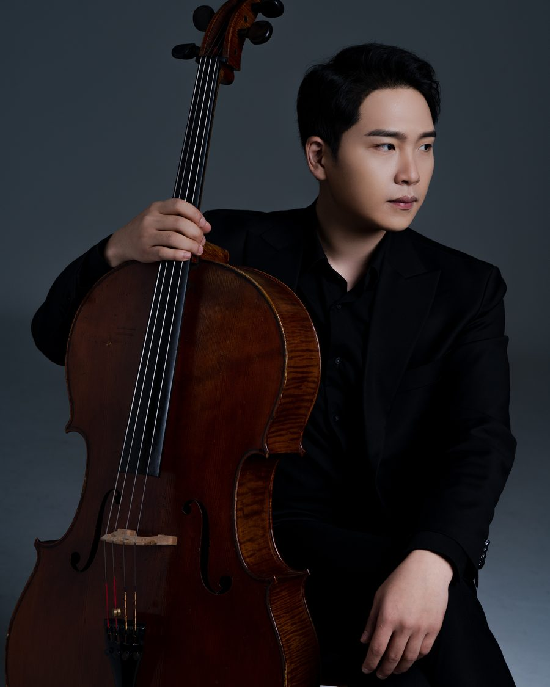

→ 단원 목록으로

첼로
이희수
단원첼로
주요 약력
- 한국예술종합학교 예술사 졸업
- 독일 드레스덴 국립음대 석사(Master) 졸업
- 대구음협, 마산음협, 대전음협, 음악교육신문사, 성정음악콩쿨, 음악저널, 음악춘추 등 다수 콩쿠르 우승 및 입상
- 디토 오케스트라, 천안시립교향악단, 경북도립교향악단 객원, 슈타트 필하모닉, 디오오케스트라, 그랜드심포니 오케스트라 객원수석
- 현) Ensemble BOAZ, 앙상블 솔, 앙상블 노이슈타트, 부산 비르투오조 앙상블, 솔리스트 첼로앙상블 경상, The Cellist of KNUA 멤버, 앙상블 Sonore, Trio Bellino, 대구 비르투오조 챔버 단원, 경산시립교향악단 첼로 수석, 포항예고 출강